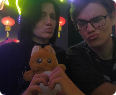
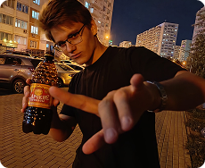
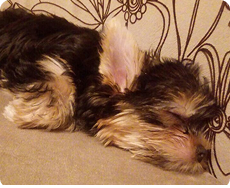
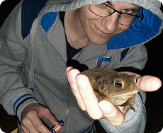
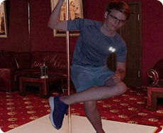
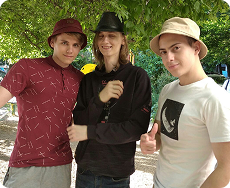

Наведись на воспоминания
-

Эт моя любимка <3
На фотке мы от души нахлебались супа в Tori Ramen. -

Супер-пупер квас! Квас особо не люблю, но царские припасы топчик:)
-

Собака по имени Буся. На фото ей всего пару месяцев. Милаха :3
-

Это момент, когда я гулял ночью с друзьями.
Было забавно. -

Смешная фотожаба. Это я, но будто танцую на шесте в клубе хаха.
-

Можно увидеть, что панамки сочетаются с верхом. Такой летний флешмоб.
Очень люблю котиков, хотя у меня дома живет ручная крыса.
Вот интересный факт о котиках: они обладают уникальной способностью приземляться на лапы после падения, и это явление называется "рефлексом выпрямления". Этот механизм начинает развиваться у котят уже в возрасте 3-4 недель. Когда кошка падает, она использует свой гибкий позвоночник и внутреннее ухо, чтобы быстро определить положение своего тела в пространстве.